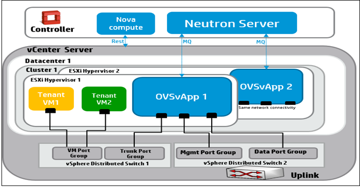

To provide the network as a service for tenant VM's hosted on ESXi Hypervisor, a service VM named OVSvApp VM is deployed on each ESXi Hypervisor within a cluster managed by OpenStack Nova, as shown in the following figure.

The OVSvApp VM runs hlinux as a guest operating system, and has Open vSwitch 2.1.0 or above installed. It also runs an agent called OVSvApp agent, which is responsible for dynamically creating the port groups for the tenant VMs and manages OVS bridges, which contain the flows related to security groups and L2 networking.
The OVSvApp VM is orchestrated using EON. For more information on the EON service, see HPE Helion OpenStack 2.0: ESX ON-Boarding Service (EON).
To facilitate fault tolerance and mitigation of data path loss for tenant VMs, run the neutron-ovsvapp-agent-monitor process as part of the neutron-ovsvapp-agent service, responsible for monitoring the Open vSwitch module within the OVSvApp VM. It also uses a nginx server to provide the health status of the Open vSwitch module to the Neutron server for mitigation actions. There is a mechanism to keep the neutron-ovsvapp-agent service alive through a systemd script.
When a OVSvApp Service VM crashes, an agent monitoring mechanism starts a cluster mitigation process. You can mitigate data path traffic loss for VMs on the failed ESX host in that cluster by putting the failed ESX host in the maintenance mode. This, in turn, triggers the vCenter DRS migrates tenant VMs to other ESX hosts within the same cluster. This ensures data path continuity of tenant VMs traffic.
Lists all the clusters where at least one round of host mitigation has happened.
Example:
neutron ovsvapp-mitigated-cluster-list +----------------+--------------+-----------------------+---------------------------+ | vcenter_id | cluster_id | being_mitigated | threshold_reached | +----------------+--------------+-----------------------+---------------------------+ | vcenter1 | cluster1 | True | False | | vcenter2 | cluster2 | False | True | +---------------+------------+-----------------+------------------------------------+
Shows the status of a particular cluster.
neutron ovsvapp-mitigated-cluster-show --vcenter-id vcenter1 --cluster-id cluster1 +---------------------------+-------------+ | Field | Value | +---------------------------+-------------+ | being_mitigated | True | | cluster_id | cluster1 | | threshold_reached | False | | vcenter_id | vcenter1 | +---------------------------+-------------+
There can be instances where a triggered mitigation may not succeed and the neutron server is not informed of such failure (for example, if the selected agent which had to mitigate the host, goes down before finishing the task). In this case, the cluster will be locked. To unlock the cluster for further mitigations, use the update command.
Modify the values of being-mitigated from True to False to unlock the cluster.
neutron ovsvapp-mitigated-cluster-update --vcenter-id vcenter1 --cluster-id cluster1 --being-mitigated False
Update the threshold-reached value to True, if no further migration is required in the selected cluster.
neutron ovsvapp-mitigated-cluster-update --vcenter-id vcenter1 --cluster-id cluster1 --being-mitigated False --threshold-reached True
Rest API
VBrownBag session in Vancouver OpenStack Liberty Summit:
https://www.youtube.com/watch?v=icYA_ixhwsM&feature=youtu.be
Wiki Link:
Codebase:
Whitepaper:
https://github.com/hp-networking/ovsvapp/blob/master/OVSvApp_Solution.pdf